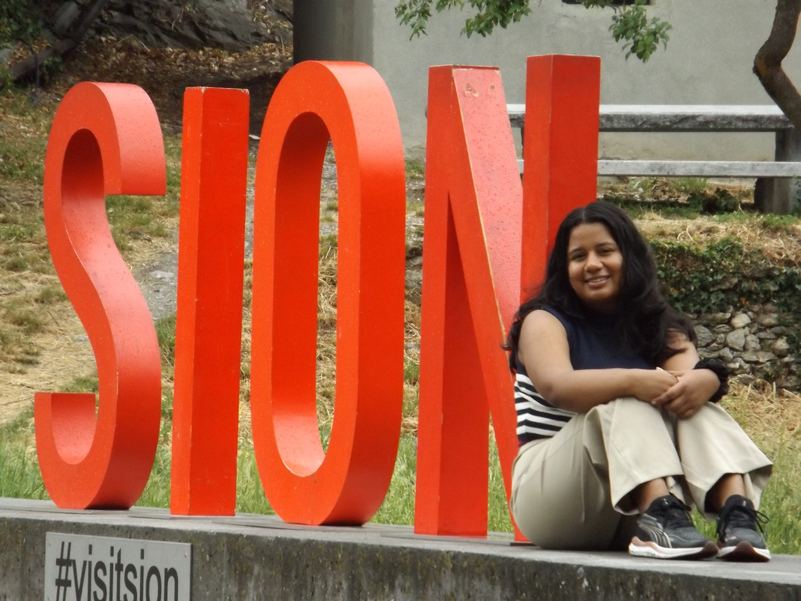
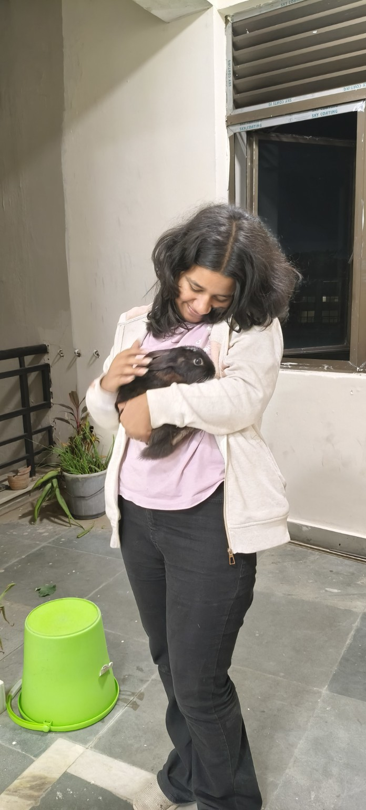
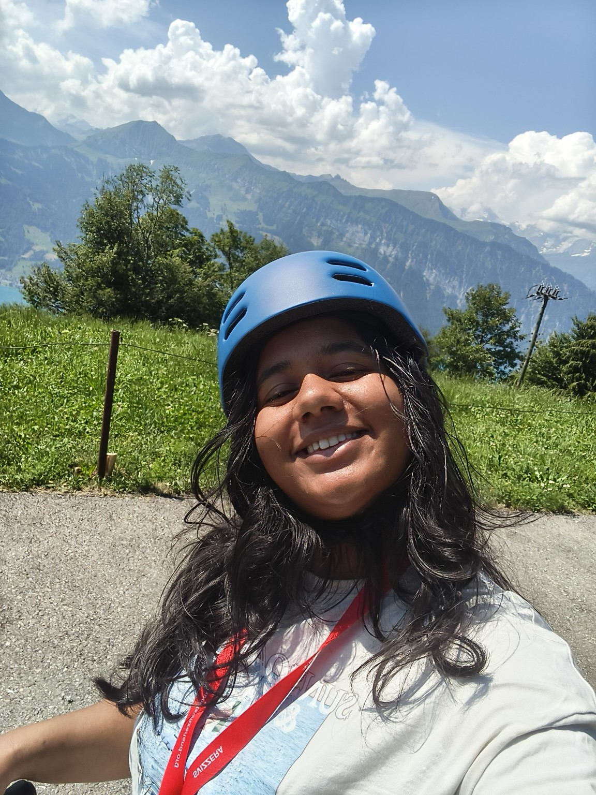
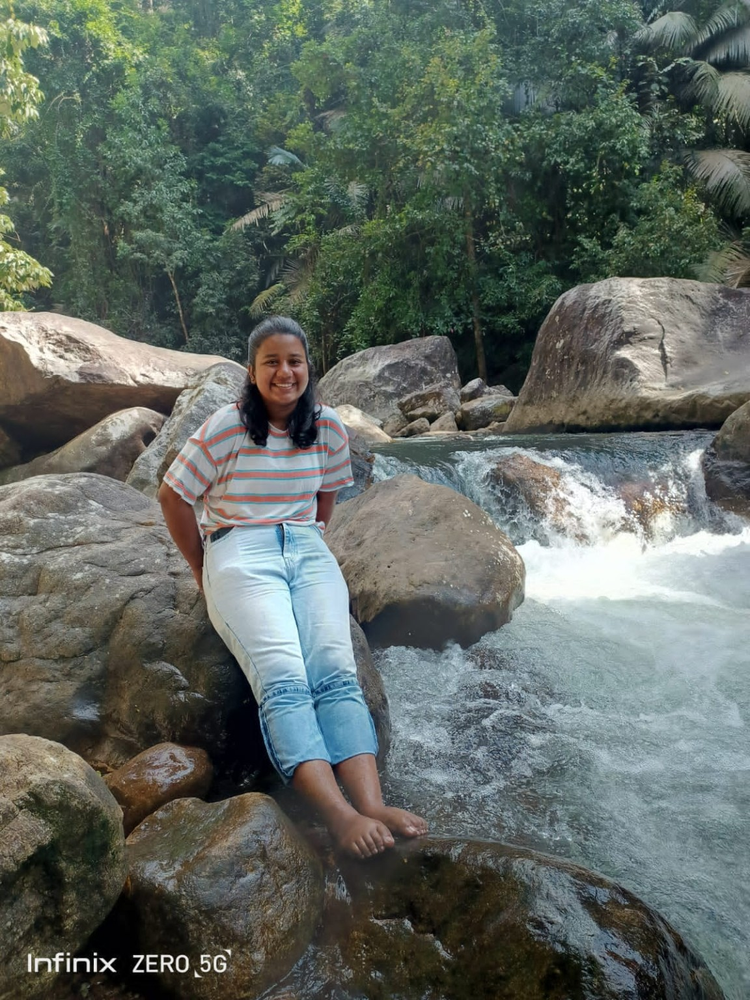

ABOUT
About
A little more about my interests and experiences outside of work.
OUTSIDE OF WORK
Outside of work
Outside of work, I love travelling and exploring new places. One of my biggest ambitions is to see as much of the world as possible—not just famous destinations, but also smaller towns, unfamiliar streets, and the everyday experiences that make each place unique.
I enjoy long walks through unfamiliar cities, meeting people from different backgrounds, discovering new cultures, and occasionally making spontaneous plans. I particularly enjoy experiences that take me outside my usual routine.
I'm naturally curious and enjoy trying new things, whether that's visiting somewhere new, learning something completely unrelated to my work, or having an unexpected conversation that changes how I see something.
There is still so much of the world I want to experience, and I hope to keep making room for that curiosity alongside my academic life.






SAY HELLO